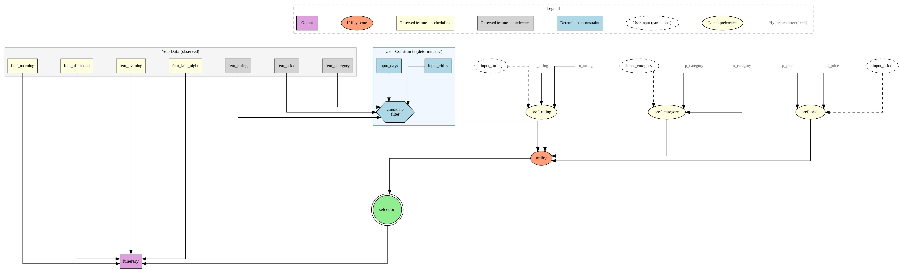
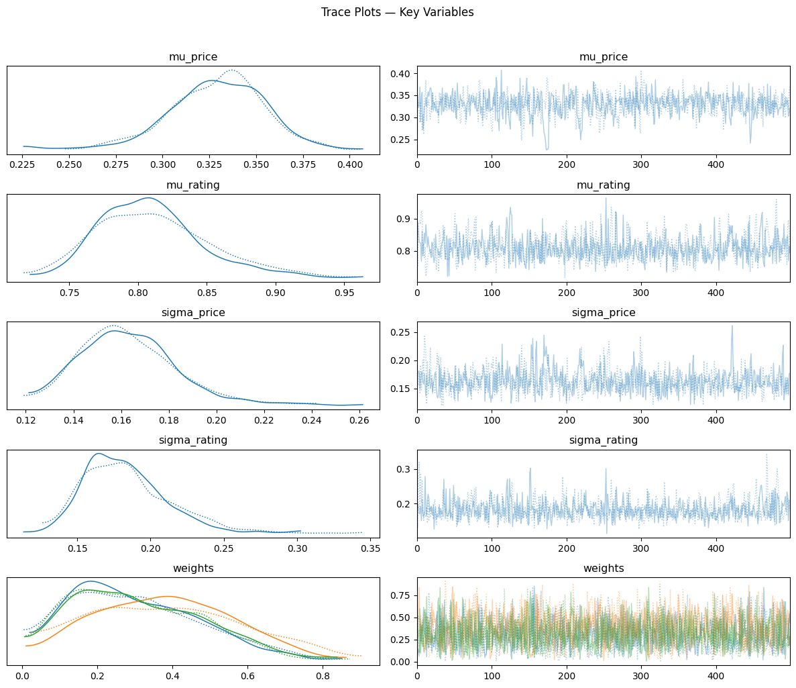
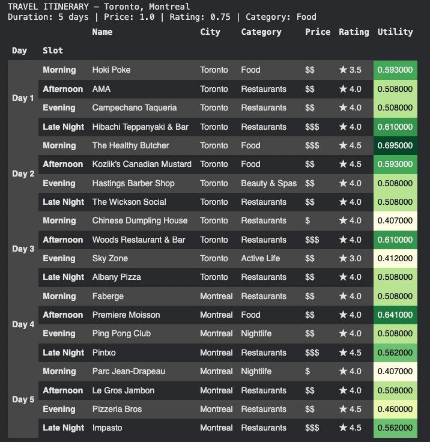

01 — Why This Project?
Travel planning is an inference problem.
Every recommendation system faces the same dirty secret: it doesn't really know what you want. It guesses from proxies — past clicks, star ratings, vague budget signals. Most systems pretend that uncertainty doesn't exist.
We didn't. Instead of a single "best" answer, we built a system that models preference uncertainty explicitly using Bayesian inference — so the itineraries it produces are calibrated, diverse, and honest about what they don't know.
A model trained to generate personalized itineraries must be driven by the same factors that guide a human when building an itinerary from scratch: where the user is traveling, how long they will be staying, and how much money they are willing to spend. This project looks to solve this problem using an MCMC + Bayesian probabilistic approach.
02 — Pipeline
Five stages, one trip.
Stage 01
Data Ingestion
150k+ Yelp businesses cleaned, accent-normalized & filtered to travel-relevant categories
Stage 02
Feature Engineering
Price tiers, time-of-day slots, category encoding — derived from structured attributes & hours
Stage 03
Dynamic Bayes Net
pgmpy DBN captures how preferences evolve across days — morning coffee → evening nightlife
Stage 04
MCMC Inference
PyMC + NUTS samples posterior distributions over price, rating, and category utility weights
Stage 05
Itinerary Generation
Posterior predictive sampling + softmax selection → personalized multi-day, multi-city trips
03 — Data
Powered by the Yelp Open Dataset.
Powered by the Yelp Open Dataset (via Kaggle), filtered to businesses relevant to travel: restaurants, museums, nightlife, parks, hotels, spas, and more.
This dataset only contained Yelp reviews from a handful of cities across the US and Canada — meaning this project represents more of a proof of concept rather than a final workable model that operates for any city in the world.
Additional data cleaning was required, including removing unnecessary characters across the dataset, filtering out businesses that wouldn't realistically be visited on a vacation, and manually assigning relative price scores and hours of operation to businesses where none were listed.
04 — DAGs
How the model sees your preferences.
During training, simulated user preference profiles are provided as observed values for
input_price, input_rating, input_duration, and
input_category, allowing the model to learn population-level hyperparameters
(the μ and σ nodes at the top).
At inference, a real user may supply some or all of these inputs. The population-level hyperparameters remain fixed, while the posterior over the latent preference nodes is updated based on available user inputs. The dashed user input nodes are fully observed during training but only partially observed during inference.

05 — The Model
Two Bayesian engines, one framework.
1. Dynamic Bayesian Network (pgmpy)
A DBN models temporal dependencies between activity choices across a multi-day trip. It captures the intuition that what you do in the morning shapes what feels right in the evening — and that preferences shift day to day.
2. Hierarchical Utility Model (PyMC)
Each user's utility for a business is modeled as a weighted sum of three components:
The weights w_price, w_rating, and w_category are
random variables drawn from a Dirichlet prior and inferred via MCMC. The model is
honest: it knows it doesn't know how much you care about price vs. quality.
Sampling used the NUTS sampler (No U-Turn Sampler) — 2 chains, 2,000 draws each. Convergence assessed via R-hat and effective sample size (ESS).
06 — Diagnostics
The model converged. Mostly.

07 — Sample Output
The itinerary.
Given user inputs — cities, trip length, price ceiling, minimum rating, and category preference — the system samples from the posterior and builds a day-by-day, slot-by-slot travel plan. Cities are distributed evenly across days. Three alternative itineraries are generated per run using different random seeds, all drawn from the same posterior.

08 — Tech Stack
Built with.
09 — Key Takeaways
What we learned.
10 — Notes & Future Work
Looking ahead
As indicated earlier, this dataset is limited to only a handful of cities, and thus is not operational for a full user experience. Below are limitations of and opportunities for expanding this proof of concept:
1. The itinerary generation does not take into account the exact longitude and latitude of recommended businesses, only the city in which each business is located. This means that if a generated morning activity and afternoon activity were two hours apart, the model would not account for that when constructing the itinerary.
2. The dataset was heavily skewed towards restaurants, even after the activity diversity quota was implemented. A more robust training dataset with broader business data beyond restaurants would improve the true usability of this generator.
3. Output quality can be further improved by sourcing additional business data, such as peak hours/seasons, virality, and other variables that vacationers value in itinerary building.